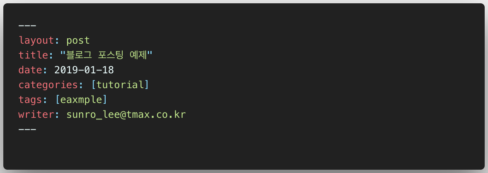

Intro
Super Resolution 은 저해상도(Low Resolution) 이미지로부터 고해상도(High Resolution) 이미지를 만들어 내는 연구분야 입니다. 낮은 사양의 촬영기기, 저장소와 전송에 드는 비용을 절약하기 위해 적용되는 손실압축 알고리즘 등에 의해서 낮은 해상도의 이미지가 생성될 수 있으며 이들은 사물을 식별하기 어렵거나 왜곡이 발생하는 등 여러 방면에서 문제가 될 수 있습니다. 이 논문에서는 딥러닝을 이용한 Single Image Super Resolution 연구들에 관해 소개하고 있습니다.
SISR 기술 구분
SISR은 크게 세 종류로 기술이 구분됩니다:
- Interpolation: bicubic interpolation, Lanczos resampling과 같은 것들이 유명한데 이 방법들은 (다른 방법들에 비해)속도가 빠르고 간단하지만 성능이 떨어짐.
- Reconstruction: prior knowledge 기반으로 이미지를 생성함. 시간을 많이 사용하고 scale factor가 많아질 수록(복잡한 이미지일수록?) 성능이 저하된다.
- Learning based: Markov Random Field, Neighbor embedding method, sparse coding method, random forest, Deep Learning based model 등이 제안되었으며 이 논문에서 다루는 것은 DL 기반 방법.
유튜브 컨텐츠 업로드 되는지 테스트하기.
Intro
블로그는 GitHub Pages와 Jekyll을 기반으로 동작합니다. Git 저장소에 markdown으로 작성된 포스트를 등록하면, Jekyll에서 미리 정의해놓은 형태의 웹 페이지로 변환하는 방식입니다. 그렇기떄문에 글을 작성할 때는 몇 가지 양식을 맞출 필요가 있습니다.
1. 파일 작성
- 파일 작성은
_posts폴더에 YYYY-MM-DD-name-of-post.md 형식을 따라 작성해야 합니다. - 포스트 맨 위에 YAML을 작성해야 합니다. YAML 예시는 아래 그림에 있습니다.
